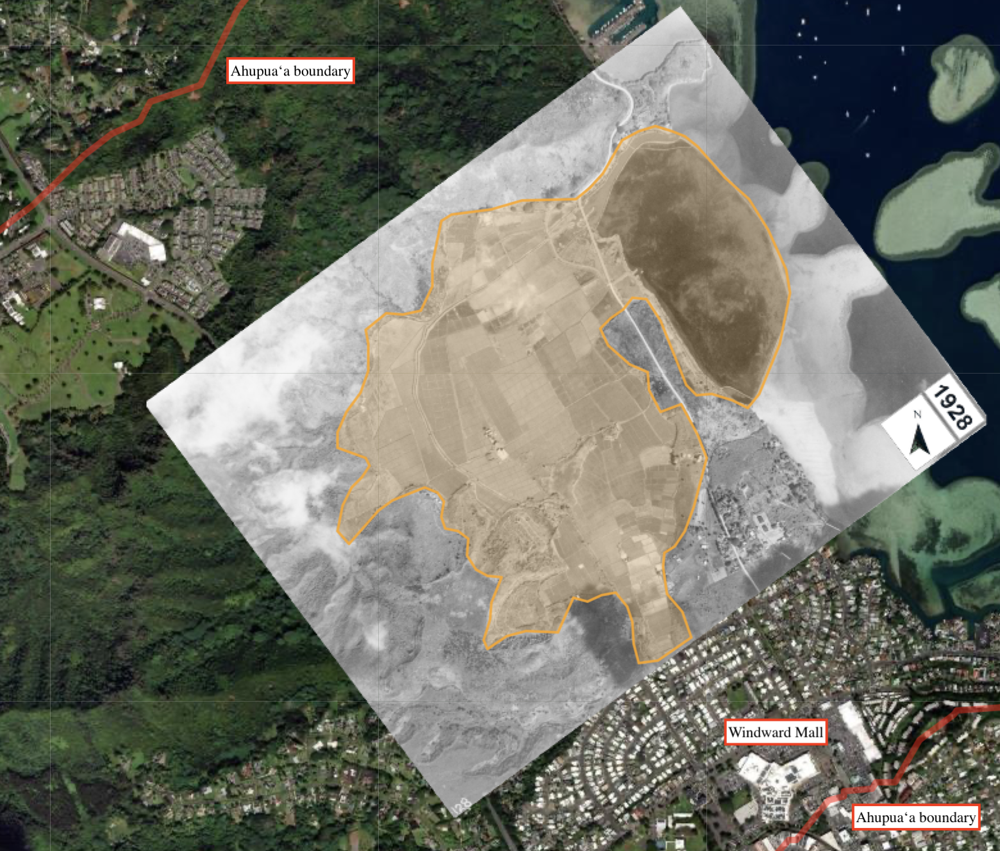

Aloha! You are being asked to participate in a research study conducted by (Dr Kirsten Oleson and Louis Chua) from the (Natural Resources and Environmental Management Department) at the University of Hawai‘i (Mānoa). (The results from this survey will contribute to Louis Chua’s PhD dissertation).
What am I being asked to do?
If you participate in this project, you will be asked to fill out a short survey. Taking part in this study is your choice.
Your participation in this project is completely voluntary. You can choose to take part or you can choose not to take part in this study. You also can change your mind at any time. If you stop being in the study, there will be no penalty or loss to you.
Why is this study being done?
The purpose of this research is to study the value of cultural ecosystem services in the He’eia ahupua’a. Your honest responses to this survey will help advance the understanding of how Oʻahu residents perceive ecosystem services of relational and cultural importance.
What will happen if I decide to take part in this study?
The survey will consist of two main Yes/ No questions, followed by five other questions about your demographic details (none of which can be used to identify your identity). This will take 2-5 minutes.
What are the risks and benefits of taking part in this study?
There should be little to no risk to you for participating in this research project. If you do become stressed or uncomfortable, you can choose to stop taking the survey and withdraw from the project altogether.
Privacy and Confidentiality:
You will not be asked for any personal information, such as your name or address. Please do not include any personal information in your survey responses. Only my University of Hawai'i advisor and I will have access to the raw data. Other agencies that have legal permission have the right to review research records. The University of Hawai'i Human Studies Program has the right to review research records for this study.
You may contact the UH Human Studies Program at 808.956.5007 or uhirb@hawaii.edu to discuss problems, concerns and questions, obtain information, or offer input with an informed individual who is unaffiliated with the specific research protocol. Please visit http://go.hawaii.edu/jRd for more information on your rights as a research participant.
Please keep a copy of the informed consent for your records and reference.
Proceeding with the survey will be considered your consent to participate in this study.
Mahalo!
Our ʻĀina
Heʻeia today is the most intact and functioning ahupuaʻa systems on Oʻahu. While much of Oʻahu has become highly developed, Heʻeia stands apart as being a hub for ʻāina resotration.
Many still hold deep lineal and relational connections to this land, whose way of life are threatened by urban development. These restored lands today harbor and perpetuate generational moʻolelo (stories),
inspire, give life, and nourish in more ways than one, honoring the care and love of generations past, all the while keeping a keen eye on stewardship for communities and future generations
that will inherit the bountiful ʻāina of Heʻeia.
(Above) What was once invasive groves of mangroves are now thriving native wetland habitats.
The aim is to restore Heʻeia ahupuaʻa to a state of ʻāina momona (abundant land) again.
Scroll down to explore the sights and sounds of Heʻeia.
<< show landscape drone eye view of ahupuaʻa, + waterfall, followed by scenes harvesting in loi and loko ia.>>
Your input in the survey below will greatly help us assess the necessary sacrifices and resources, as we plan for Heʻeia ahupuaʻa future.
ʻĀina in Heʻeia affords space where residents can feel safe, nutured, heal, share food and laughter, teach their keiki (children) and connect with members in their community.
This is a 1928 airphoto of Heʻeia showing the extent of flooded cultivated fields in the ahupua'a. It is a key restoration objective of many community members
in Heʻeia. The orange boundary shows approximately 380 acres of 'āina being restored. Existing expansion are limited by factors such as financing, labor, urban development pressure, invasion
by non-native species, and lack of freshwater.

Listen to sounds from our restored wetlands
Embedded audio or video recordings here. assets/audio or assets/video.
Take the Survey
When you're ready, click the button below to launch the survey.